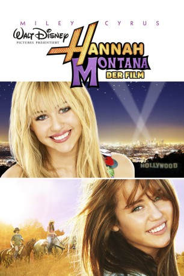
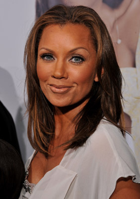
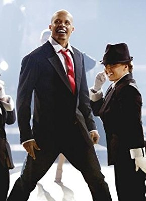
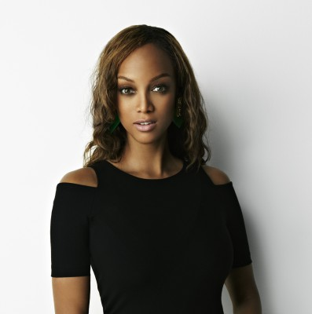
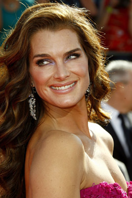

#7556 Hannah Montana: Der Film
Alternativ: Hannah Montana: The Movie
 
 IMDB-Wertung: 4.3 / 10
IMDB-Wertung: 4.3 / 10  Metascore: 0
Metascore: 0 
Tagsüber ist Miley Stewart ein ganz normales Schulmädchen. Abends setzt sie jedoch ihre blonde Langhaarperücke auf und verwandelt sich in den Popstar Hannah Montana. Neben ihrem Vater, dem Bruder und der Oma weiss nur noch ihre beste Freundin Lilly von ihrem Geheimnis. Bislang konnte der Teenager so das Beste aus beiden Welten geniessen. Doch ihr Vater macht sich Sorgen. Er fürchtet dass ihr der Ruhm zu Kopfe steigt. Als Miley nach New York fliegen soll verfrachtet er sie kurzerhand in einen Flieger in die Heimat, nach Tennessee. Miley staunt nicht schlecht als sie statt der Skyline plötzlich Kühe vor der Nase hat. Aber auch das scheinbar öde Landleben hat seine Reize – und damit ist nicht nur der niedliche Jungcowboy Travis gemeint.
Jahr: 2009
Dauer: 102 Minuten
FSK: 0
Land: USA Studio: Walt Disney Studios Motion PicturesTonspuren: DTS - ,
Untertitel: Deutsch,
Auflösung: 1080p (1920x1040) Größe: 8130 MB
Genre: Drama, Musik, Komödie, Familie, Liebe
Regisseur:  Peter Chelsom
Peter Chelsom
Drehbuch: Dan Berendsen
Soundtrack:
Darsteller:
 Miley Cyrus als Hannah / Miley
Miley Cyrus als Hannah / Miley- Billy Ray Cyrus als Robby Ray
- Emily Osment als Lilly
- Jason Earles als Jackson
- Mitchel Musso als Oliver
- Moises Arias als Rico
 Lucas Till als Travis Brody
Lucas Till als Travis Brody-  Vanessa Williams als Vita
 Margo Martindale als Ruby
Margo Martindale als Ruby- Peter Gunn als Oswald Granger
 Melora Hardin als Lorelai
Melora Hardin als Lorelai Barry Bostwick als Mr. Bradley
Barry Bostwick als Mr. Bradley Beau Billingslea als Mayor
Beau Billingslea als Mayor- Emily Grace Reaves als Cindy Lou
- Jane Carr als Lucinda
- Taylor Swift als Herself
- Gary LeVox als Rascal Flatts
- Jay DeMarcus als Rascal Flatts
- JoeDon Rooney als Rascal Flatts
- Joshua Childs als Store Manager
- Natalia Dyer als Clarissa Granger
- Adam Gregory als Drew
- Shawn Carter Peterson als Video Director
-  Jamal Sims als Rodeo Drive Dancer
- John Will Clay als Volleyball Captain
- Michael Cornacchia als Security Guard
- Valorie Hubbard als Ticket Clerk
- Tommy Barnes als Farmer's Market Vendor
- Jack Hoke als Bowtie Jack
- Lisa Darr als Mother on the Pier
- Paul Perri als Father on the Pier
 Cole S. McKay als Pastry Chef
Cole S. McKay als Pastry Chef- Marc Allen als Cafe Patron , uncredited
-  Tyra Banks als Herself , uncredited
- Lawrence Bull Jr. als Caterer #1 , uncredited
- Rickey Castleberry als Concert Goer , uncredited
- Kayla Clary als Excited Fan , uncredited
- Brandi Cyrus als Hoedown Throwdown Dancer , uncredited
- Noah Cyrus als Little Dancing Girl , uncredited
- Stephanie Katherine Grant als Concert Scene , uncredited
- Joel Harold als Hoe Down Throw Down Dancer , uncredited
- Scott C. Jackson als Fundraiser V.I.P. , uncredited
- Dani Jayden als Sweet 16 Party Goer , uncredited
- Bayli Johnston als (uncredited
- Anne Lockhart als Concert Mom , uncredited
- Roman Marshanski als Concert Goer , uncredited
- Ajay Nayyar als Concert Guy , uncredited
- Katie O'Malley als Fangirl , uncredited
-  Brooke Shields als Miley's Mom , uncredited
- Jake Tandy als Skateboarder kid , uncredited
Datei: X:\2009(G-M)\Hannah Montana Der Film (2009, FSK0, 1920x1040).mkv seit 20.11.2017
Festplatte: HD 2009(G-Z)-2010(A-F)
 Es gibt insgesamt 82 Filme in der Gruppe '2009(G-M)'
Es gibt insgesamt 82 Filme in der Gruppe '2009(G-M)'